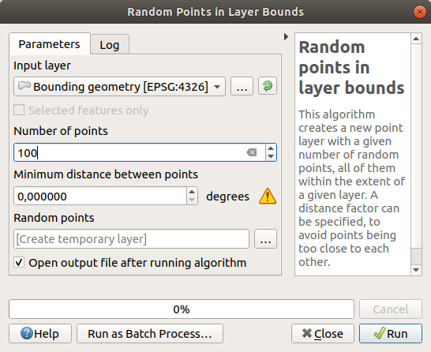
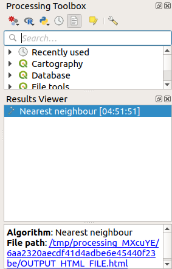
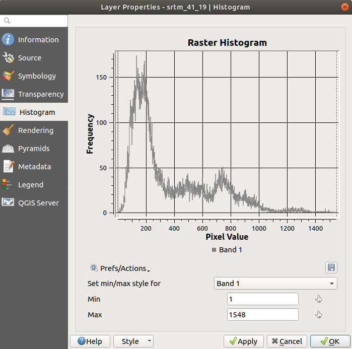

6.4. သင်ခန်းစာ - တည်နေရာဆိုင်ရာစာရင်းအင်းအချက်အလက် (Lesson: Spatial Statistics)
Note
Linfiniti နှင့် S Motala (Cape Peninsula University of Technology) တို့မှ ဖန်တီးပေးထားသော သင်ခန်းစာဖြစ်ပါသည်။
Spatial statistics သည် Vector dataset တစ်ခုကို ဆန်းစစ်လေ့လာရန်နှင့် နားလည်စေရန် လုပ်ဆောင်ပေးနိုင်ပါသည်။ QGIS တွင် statistics ဆိုင်ရာ ဆန်းစစ်လေ့လာခြင်းအတွက် အသုံးဝင်သော tool များစွာ ရှိပါသည်။
ဤသင်ခန်းစာအတွက် ရည်မှန်းချက်- Processing Toolbox ထဲရှိ QGIS ၏ spatial statistics tool များကို အသုံးပြုတတ်စေရန်
6.4.1. ★☆☆ လိုက်လုပ်ကြည့်ပါ- စမ်းသပ် Dataset တစ်ခုဖန်တီးခြင်း (Follow Along: Create a Test Dataset)
အလုပ်လုပ်ဆောင်မည့် dataset တစ်ခုရရှိရန် ကျပန်း point များအစုတစ်ခုကို ဖန်တီးပါမည်။
ထိုသို့လုပ်ဆောင်ရာတွင် point များကိုဖန်တီးလိုသော ဧရိယာကိုသတ်မှတ်ရန် polygon dataset တစ်ခုလိုအပ်ပါမည်။
Streets (လမ်းများ) ဖြင့် လွှမ်းခြုံထားသော ဧရိယာကို အသုံးပြုပါမည်။
Project အသစ်တစ်ခုကိုဖွင့်ပါ
roadsdataset နှင့်exercise_data/raster/SRTM/ထဲရှိsrtm_41_19(ပင်လယ်ရေမျက်နှာပြင်အမြင့်ပြ ဒေတာ) ကို ထည့်သွင်းပါ။Note
SRTM DEM layer သည် roads layer နှင့် CRS ချင်းမတူညီသည်ကို တွေ့ရကောင်းတွေ့ရနိုင်ပါသည်။ QGIS သည် ထို layer နှစ်ခုလုံးကို CRS တစ်ခုထဲအဖြစ်သို့ projection ပြောင်းလဲပေးပါသည်။ နောက်လာမည့် လေ့ကျင့်ခန်းများအတွက် ထိုကွာခြားမှုသည် အရေးမကြီးပါ၊ သို့သော် projection ပြောင်းလဲကြည့်ပါ (ဤမော်ဂျူးထဲရှိ အစောပိုင်းသင်ခန်းစာတွင် ပြသခဲ့သည့်အတိုင်း)။
Processing toolbox ကိုဖွင့်ပါ
Road များအားလုံးကို လွှမ်းခြုံထားသော ဧရိယာတစ်ခုရရှိရန် tool ကိုအသုံးပြုပြီး Geometry Type အနေဖြင့်
Convex Hullကိုရွေးချယ်ပါ-Output ကိုမသတ်မှတ်ပေးထားပါက Processing သည် ယာယီ layer များကို ဖန်တီးပေးမည်ဖြစ်ပါသည်။ Layer များကို ချက်ချင်းသိမ်းဆည်းမည်လား သို့မဟုတ် နောက်တစ်ဆင့်မှ သိမ်းဆည်းမည်လား ဆိုသည်မှာ မိမိသဘောအတိုင်းဖြစ်သည်။
ကျပန်း point များဖန်တီးခြင်း (Creating random points)
အဆိုပါ ဧရိယာအတွင်း ကျပန်း point 100 ဖန်တီးရန် tool ကိုအသုံးပြုပြီး minimum distance (အနည်းဆုံးအကွာအဝေး) ကို
0.0ထားပါ- Note
အဝါရောင်သတိပေးချက်သင်္ကေတ သည် အဆိုပါ parameter သည် အကွာအဝေးများနှင့် စပ်လျဉ်းသည်ဟု ဆိုလိုပါသည်။ Bounding geometry layer သည် Geographical Coordinate System တစ်ခုထဲတွင် ရှိနေသည်ကို algorithm မှ သတိပေးခြင်းသာ ဖြစ်ပါသည်။ ဤဥပမာအတွက် အဆိုပါ parameter ကိုအသုံးပြုမည်မဟုတ်သည့်အတွက် ၎င်းကိုလျစ်လျူရှုထားနိုင်ပါသည်။
လိုအပ်ပါက ထုတ်ယူထားသော ကျပန်း point များကို ပိုမိုကောင်းမွန်စွာမြင်နိုင်စေရန် legend ၏ အပေါ်သို့ရွှေ့ပေးပါ-

Data နမူနာကောက်ယူခြင်း (Sampling the data)
Raster မှ နမူနာ dataset တစ်ခုကိုဖန်တီးရန် algorithm ကိုအသုံးပြုရန်လိုအပ်ပါသည်။ ဤ tool သည် point များ၏တည်နေရာများ၌ရှိသော raster ကိုနမူနာကောက်ယူပေးပြီး raster ထဲရှိ band အရေအတွက်ပေါ်မူတည်၍ raster တန်ဖိုးများကို field အသစ် (များ) ထဲသို့ ပေါင်းထည့်ပေးပါသည်။
Sample raster values algorithm dialog ကိုဖွင့်ပါ
Sampling point များပါဝင်သော layer အနေဖြင့်
Random_pointsကိုရွေးပါ၊ တန်ဖိုးများရယူမည့် band အနေဖြင့် SRTM raster ကိုရွေးပါ။ Field အသစ်၏ default အမည်မှာrvalue_Nဖြစ်ပြီးNသည် raster band အရေအတွက်ဖြစ်သည်။ ရှေ့ဆက်စာလုံး (prefix) ၏အမည်ကို လိုအပ်သလို ပြောင်းလဲနိုင်ပါသည်။Run ကိုနှိပ်ပါ
Raster ဖိုင်မှ နမူနာကောက်ယူထားသော data များကို Sampled Points layer ၏ attribute ဇယားထဲတွင် စစ်ဆေးကြည့်နိုင်ပါသည်။ ၎င်း data များသည် သင်ရွေးချယ်ပေးထားသောအမည်ဖြင့် field အသစ်တစ်ခုထဲတွင် ရှိနေပါလိမ့်မည်။
ဖြစ်နိုင်ချေရှိသော sample layer ကို အောက်တွင်ပြသထားပါသည်-
Sample point များကို rvalue_1 field ကိုအသုံးပြုပြီး အတန်းအစားခွဲခြား (classify) ထားပြီး အနီရောင် point များသည် ပိုမြင့်သော အမြင့်၌ ရှိကြပါသည်။
အဆိုပါ sample layer ကို ကျန်ရှိသော statistics လေ့ကျင့်ခန်းများအတွက် အသုံးပြုသွားမည်ဖြစ်ပါသည်။
6.4.2. ★☆☆ လိုက်လုပ်ကြည့်ပါ - အခြေခံစာရင်းအင်းအချက်အလက် (Follow Along: Basic Statistics)
အဆိုပါ layer အတွက် အခြေခံ statistics များကို ရယူပါမည်။
Attributes Toolbar ထဲရှိ
 Show statistical summary icon ကိုနှိပ်ပါ။ Panel အသစ်တစ်ခုပေါ်လာပါမည်။
Show statistical summary icon ကိုနှိပ်ပါ။ Panel အသစ်တစ်ခုပေါ်လာပါမည်။ပေါ်လာသော dialog ထဲတွင် source အဖြစ်
Sampled Pointslayer ကိုသတ်မှတ်ပါ။Field combo box ထဲတွင် rvalue_1 field ကိုရွေးချယ်ပါ။ ထို field သည် statistics တွက်ချက်လိုသော field ဖြစ်ပါသည်။
Statistics Panel ကို တွက်ချက်ထားသော statistics များဖြင့် အလိုအလျောက် update လုပ်ပေးသွားမည်ဖြစ်သည်-

Note
 Copy Statistics To Clipboard ခလုတ်ကိုနှိပ်ပြီး တန်ဖိုးများကို copy လုပ်နိုင်ပြီး ရလာဒ်များကို spreadsheet တစ်ခုထဲတွင် paste လုပ်နိုင်ပါသည်။
Copy Statistics To Clipboard ခလုတ်ကိုနှိပ်ပြီး တန်ဖိုးများကို copy လုပ်နိုင်ပြီး ရလာဒ်များကို spreadsheet တစ်ခုထဲတွင် paste လုပ်နိုင်ပါသည်။လုပ်ဆောင်မှုပြီးသွားသောအခါ Statistics Panel ကိုပိတ်လိုက်ပါ။
အမျိုးမျိုးသော statistics များရရှိနိုင်ပါသည်-
- Count
Sample များ/တန်ဖိုးများ၏ အရေအတွက်
- Sum
တန်ဖိုးများစုစုပေါင်း
- Mean
ပျမ်းမျှတန်ဖိုးသည် တန်ဖိုးများစုစုပေါင်းကို တန်ဖိုးများအရေအတွက်ဖြင့် စား ခြင်းဖြစ်သည်။
- Median
တန်ဖိုးများအားလုံးကို အငယ်ဆုံးမှ အကြီးဆုံးသို့ စီ သောအခါ အလယ်၌ရှိသော တန်ဖိုး (သို့မဟုတ် အရေအတွက်သည် စုံဂဏန်းဖြစ်လျှင် အလယ်၌ရှိသော တန်ဖိုး ၂ ခု၏ ပျမ်းမျှကိန်း) သည် တန်ဖိုးများ၏ median (တစ်ဝက်ကိန်း) ဖြစ်သည်။
- St Dev (pop)
စံတိမ်းချက် ဖြစ်သည်။ တန်ဖိုးများသည် Mean တန်ဖိုးနှင့် မည်မျှနီးကပ်စွာ စုဖွဲ့နေသည်ကို ဖော်ပြခြင်းဖြစ်သည်။ စံတိမ်းချက် နည်းလေလေ တန်ဖိုးများသည် mean တန်ဖိုးနှင့် နီးကပ်လေလေ ဖြစ်သည်။
- Minimum
အနည်းဆုံးတန်ဖိုး
- Maximum
အများဆုံးတန်ဖိုး
- Range
အနည်းဆုံးနှင့် အများဆုံး တန်ဖိုးများကြား ကွာခြားချက်
- Q1
ဒေတာတစ်ခု၏ ပထမလေးပုံတစ်ပုံ/၂၅ ရာခိုင်နှုန်း (First Quartile)
- Q3
ဒေတာတစ်ခု၏ တတိယလေးပုံတစ်ပုံ/၇၅ ရာခိုင်နှုန်း (Third Quartile)
- Missing (null) values
Data မရှိသော (null) တန်ဖိုးများအရေအတွက်
6.4.3. ★☆☆ လိုက်လုပ်ကြည့်ပါ - Point များအကြား အကွာအဝေးတွင် statistics တွက်ချက်ပါ (Follow Along: Compute statistics on distances between points)
ယာယီ point layer အသစ်တစ်ခုကိုဖန်တီးပါ။
Edit mode ကိုဖွင့်ပြီး အခြား point များအကြားတစ်နေရာရာတွင် point ၃ ခုကို digitize လုပ်ပါ။
နောက်တစ်နည်းအားဖြင့် ယခင်ကလုပ်ဆောင်ခဲ့သော ကျပန်း point ထုတ်ယူခြင်းနည်းလမ်းကို အသုံးပြုပြီး point အရေအတွက်တွင် three points သာ သတ်မှတ်ပေးပါ။
Layer အသစ်ကို သင်ကြိုက်နှစ်သက်ရာ format ဖြင့် distance_points အဖြစ် သိမ်းဆည်းပါ။
Layer ၂ ခုထဲရှိ point များအကြား အကွာအဝေးအတွက် statistics ကိုထုတ်ယူရန်-
tool ကိုဖွင့်ပါ။
Input layer အဖြစ်
distance_pointslayer ကိုရွေးချယ်ပါ၊ target layer အဖြစ်Sampled Pointslayer ကိုရွေးချယ်ပါ။အောက်ပါပုံအတိုင်း သတ်မှတ်ပါ-

Output layer ကို ဖိုင်တစ်ခုအနေဖြင့် သိမ်းဆည်းနိုင်သလို algorithm ကို run ပြီး ယာယီ output layer ကို နောက်ပိုင်းမှ သိမ်းဆည်းနိုင်ပါသည်။
Distance matrix layer ကိုထုတ်ယူရန် Run ကိုနှိပ်ပါ။
ရရှိလာသော layer ၏ attribute ဇယားကိုဖွင့်ပါ- တန်ဖိုးများသည် distance_points feature များနှင့် အနီးဆုံးဖြစ်သော Sampled Points layer ထဲရှိ point ၂ ခုနှင့် ထို distance_points feature များအကြား အကွာအဝေးများ ဖြစ်ပါသည်-

Distance Matrix tool သည် target layer ၏အနီးဆုံး point များနှင့်စပ်လျဉ်းပြီး input layer ၏ point တစ်ခုချင်းစီအတွက် အကွာအဝေး statistics များကို တွက်ချက်ပေးပါသည်။ Output layer ၏ field များတွင် input layer ထဲရှိ point များ၏ အနီးဆုံးသို့ အကွာအဝေးများအတွက် mean (ပျမ်းမျှကိန်း) ၊ standard deviation (စံတိမ်းချက်) ၊ minimum (အနည်းဆုံး) နှင့် maximum (အများဆုံး) တန်ဖိုးများပါဝင်ပါသည်။
6.4.4. ★☆☆ လိုက်လုပ်ကြည့်ပါ - အနီးဆုံးအနီးအနား ဆန်းစစ်လေ့လာခြင်း (layer အတွင်း) (Follow Along: Nearest Neighbor Analysis (within layer))
Point layer တစ်ခု၏ nearest neighbor analysis လုပ်ဆောင်ရန်-
ကိုရွေးပါ။
ပေါ်လာသော dialog ထဲတွင် Random points layer ကိုရွေးချယ်ပြီး Run ကိုနှိပ်ပါ။
Result Viewer Panel ထဲတွင် ရလာဒ်များ ပေါ်လာပါလိမ့်မည်။
 ရလာဒ်များပါဝင်သော
htmlစာမျက်နှာကိုဖွင့်ရန် အပြာရောင် link ကိုနှိပ်ပါ-
6.4.5. ★☆☆ လိုက်လုပ်ကြည့်ပါ - ပျမ်းမျှ ကိုဩဒိနိတ် (Follow Along: Mean Coordinates)
Dataset တစ်ခု၏ ပျမ်းမျှ ကိုဩဒိနိတ်များကို ရရှိရန်-
ကိုဖွင့်ပါ။
ပေါ်လာသော dialog ထဲတွင် Input layer အဖြစ် Random points ကိုသတ်မှတ်ပါ၊ အခြား မဖြစ်မနေရွေးချယ်ရန်မလိုအပ်သော အရာများကို မပြောင်းလဲပဲ ချန်ထားပါ။
Run ကိုနှိပ်ပါ။
၎င်းရလာဒ်ကို ကျပန်း sample များဖန်တီးစဉ်ကအသုံးပြုခဲ့သော polygon ၏ အလယ်ကိုဩဒိနိတ်နှင့်နှိုင်းယှဉ်ကြည့်ပါမည်။
ကိုဖွင့်ပါ
ပေါ်လာသော dialog ထဲတွင် input layer အဖြစ်
Bounding geometryကိုရွေးချယ်ပါ။
မြင်တွေ့ရသည့်အတိုင်း ပျမ်းမျှကိုဩဒိနိတ် (ပန်းရောင် point) နှင့် study area ၏ အလယ် (အစိမ်းရောင်) သည် တစ်ထပ်တည်းမကျပါ။
Centroid သည် layer ၏ barycenter (ဒြပ်ထုဗဟိုချက်အမှတ်) (စတုရန်းတစ်ခု၏ barycenter သည် စတုရန်း၏အလယ်ဗဟိုဖြစ်သည်) ဖြစ်ပြီး ပျမ်းမျှကိုဩဒိနိတ်သည် ကိုဩဒိနိတ်ဆုံမှတ်များအားလုံး၏ ပျမ်းမျှဖြစ်သည်။

6.4.6. ★☆☆ လိုက်လုပ်ကြည့်ပါ - ကြိမ်နှုန်းပြဂရပ်များ (Follow Along: Image Histograms)
Dataset တစ်ခု၏ histogram သည် ၎င်း၏တန်ဖိုးများ ပြန့်နှံ့တည်ရှိမှုကို ပြသပါသည်။ QGIS ထဲတွင် ၎င်းကို ပြသရန် အရိုးရှင်းဆုံးနည်းလမ်းမှာ image histogram ဖြင့်ပြသခြင်းဖြစ်သည်။ မည်သည့် image layer (raster dataset) မဆို၏ Layer Properties dialog ထဲတွင် ရရှိနိုင်ပါသည်။
Layers panel ထဲရှိ
srtm_41_19layer ပေါ်တွင် right-click နှိပ်ပါကိုရွေးပါ
Histogram tab ကိုရွေးပါ ဂရပ်ဖစ်ပုံ ရရှိရန် Compute Histogram ခလုတ်ကို နှိပ်ပါ။ Raster တန်ဖိုးများအတွက် ကြိမ်နှုန်း ပြန့်နှံ့မှုကို ပြသသော ဂရပ်တစ်ခုကို မြင်တွေ့ရပါမည်။

Save plot ခလုတ်နှိပ်ပြီး ဂရပ်ကို image တစ်ခုအနေဖြင့် export ထုတ်ယူနိုင်ပါသည်။
Information tab ထဲတွင် layer နှင့်ပတ်သက်သော အသေးစိတ်အချက်အလက်များကို ကြည့်ရှုနိုင်ပါသည် (mean နှင့် max တန်ဖိုးများသည် ခန့်မှန်းများသာဖြစ်ပြီး အတိအကျမဟုတ်ပါ)။
{kind=link}
Mean တန်ဖိုးသည် 332.8 (ခန့်မှန်း 324.3) ဖြစ်ပြီး maximum တန်ဖိုးသည် 1699 (ခန့်မှန်း 1548) ဖြစ်ပါသည်။ Histogram ထဲတွင် zoom ချဲ့ကြည့်နိုင်ပါသည်။ တန်ဖိုး 0 ရှိသော pixel များစွာ ရှိသည့်အတွက် histogram သည် ဒေါင်လိုက်ချုံ့ထားသည့်ပုံစံဖြစ်နေပါသည်။ Zoom ချဲ့ကြည့်ပါက အသေးစိတ်ကို ပိုမိုမြင်ရပါလိမ့်မည်-

Note
Mean နှင့် maximum တန်ဖိုးများသည် အထက်ပါအတိုင်း အတူတူဖြစ်မနေလျှင် min/max တန်ဖိုးတွက်ချက်မှုကြောင့် ဖြစ်နိုင်ပါသည်။ Symbology tab ကိုဖွင့်ပြီး Min / Max Value Settings menu ကိုဖြန့်ကြည့်ပါ။  Min / max ကိုရွေးချယ်ပြီး Apply ကိုနှိပ်ပါ။
Min / max ကိုရွေးချယ်ပြီး Apply ကိုနှိပ်ပါ။
Histogram တစ်ခုသည် တန်ဖိုးများ၏ ပြန့်နှံ့မှုကို ပြသခြင်းဖြစ်ပြီး တန်ဖိုးများအားလုံးကို ဂရပ်ပေါ်တွင် မြင်ရနိုင်ရန် မလိုအပ်သည်ကို မှတ်သားထားပါ။
6.4.7. ★☆☆ လိုက်လုပ်ကြည့်ပါ - တည်နေရာဆိုင်ရာ သွယ်ဝိုက်တွက်ချက်ခြင်း (Follow Along: Spatial Interpolation)
Sample point များအစုတစ်ခုရှိပြီး data များကို extrapolate (ခန့်မှန်းတွက်ချက်) ပြုလုပ်လိုသည် ဆိုကြပါစို့။ ဥပမာ- အစောပိုင်းက ဖန်တီးခဲ့သော Sampled points dataset မှတဆင့် မြေပြင်အနေအထားသည် မည်သို့ပုံစံဖြစ်မည်ဆိုသည်ကို သိရှိလိုခြင်းဖြစ်သည်။
Processing Toolbox ထဲရှိ tool ကိုဖွင့်ပါ။
Point layer အတွက်
Sampled pointsကိုရွေးပါWeighting power တွင်
5.0သတ်မှတ်ပါAdvanced parameters ထဲတွင် Z value from field အား
rvalue_1ဟုသတ်မှတ်ပါRun ကိုနှိပ်ပြီး လုပ်ဆောင်မှုပြီးသည်အထိ စောင့်ဆိုင်းပါ
Dialog ကိုပိတ်လိုက်ပါ
အောက်ပါပုံသည် မူရင်း dataset (ဘယ်ဘက်) နှင့် sample point များမှ တည်ဆောက်ထားသော dataset (ညာဘက်) ကိုနှိုင်းယှဉ်ထားခြင်းဖြစ်သည်။ Sample point များသည် ကျပန်းတည်နေရာများဖြစ်သောကြောင့် သင်ရရှိသော ပုံနှင့် ကွဲပြားနိုင်ပါသည်။
မြင်တွေ့ရသည့်အတိုင်း sample point 100 သည် မြေပြင်အနေအထားကိုအသေးစိတ်ဖော်ပြရန် မလုံလောက်ပါ။ အကြမ်းမျဉ်းဆန်သော ရလာဒ်ကိုထုတ်ပေးပြီး အဓိပ္ပါယ်ကောက်လွဲမှားနိုင်ပါသည်။
6.4.8. ★★☆ မိမိကိုယ်တိုင်ကြိုးစားကြည့်ပါ - မတူညီသော Interpolation နည်းလမ်းများ (Try Yourself: Different interpolation methods)
ကျပန်း point 10000 ကိုဖန်တီးရန် အပေါ်တွင်ပြထားသော လုပ်ငန်းစဉ်များအတိုင်း လုပ်ဆောင်ပါ။
Note
Point အရေအတွက် များနေလျှင် လုပ်ဆောင်ချိန်ကြာမြင့်နိုင်ပါသည်။
မူရင်း DEM မှနမူနာကောက်ယူရန် အဆိုပါ point များကို အသုံးပြုပါ
ဤ dataset တွင် Grid (IDW with nearest neighbor searching) tool ကိုအသုံးပြုပါ
Power တွင်
5.0ဟုသတ်မှတ်ပြီး Smoothing တွင်2.0ဟုသတ်မှတ်ပါ။
ရလာဒ်များ (ကျပန်း point များ၏တည်နေရာပေါ်မူတည်၍) သည် အနည်းနှင့်အများ အောက်ပါပုံအတိုင်း ဖြစ်နေပါလိမ့်မည်-

ရလာဒ်သည် sample point အရေအတွက်များပြားသောကြောင့် မြေပြင်အနေအထားကို ပိုမိုကောင်းမွန်စွာ ဖော်ပြပေးနိုင်ပါသည်။ Sample အရေအတွက်များလေလေ ရလာဒ်ပိုကောင်းလေလေ ဖြစ်သည်ကို မှတ်သားထားပါ။
6.4.9. နိဂုံးချုပ် (In Conclusion)
QGIS တွင် dataset များ၏ တည်နေရာဆိုင်ရာ statistics များဆန်းစစ်လေ့လာရန်အတွက် tool များစွာရှိပါသည်။
6.4.10. နောက်ထပ် ဘာအကြောင်းအရာလဲ? (What’s Next?)
ယခုဆိုလျှင် vector analysis ကိုသင်ကြားပြီးဖြစ်ပါသည်။ နောက်လာမည့် မော်ဂျူးတွင် raster များဖြင့် မည်ကဲ့သို့လုပ်ဆောင်နိုင်မည်ကို သင်ကြားရမည်ဖြစ်သည်။